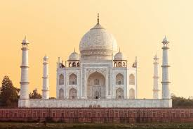
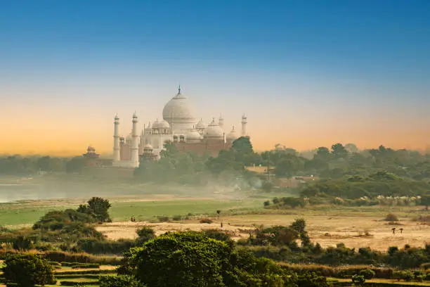

About Taj Mahal
The Taj Mahal is one of the most famous monuments in the world and is located in Agra, Uttar Pradesh, India. It was built by Mughal Emperor Shah Jahan in memory of his beloved wife Mumtaz Mahal. Construction began in 1632 and was completed in 1653.
The Taj Mahal is built entirely from white marble and is known for its stunning beauty, symmetry, and detailed craftsmanship. It is considered one of the greatest architectural achievements in history and attracts millions of tourists every year.
Taj Mahal Photo Gallery




History Timeline
1631
Mumtaz Mahal died during childbirth. Shah Jahan decided to build a monument in her memory.
1632
Construction of the Taj Mahal officially started in Agra.
1648
Main mausoleum construction was completed.
1653
The entire Taj Mahal complex including gardens and buildings was completed.
1983
Taj Mahal was declared a UNESCO World Heritage Site.
Architecture
The Taj Mahal combines elements of Islamic, Persian, Ottoman Turkish, and Indian architectural styles. The central dome rises to a height of about 73 meters and is surrounded by four elegant minarets.
The walls of the Taj Mahal are decorated with intricate carvings and inlaid precious stones such as jade, turquoise, lapis lazuli, and sapphire. The monument also features beautiful gardens, fountains, and reflecting pools that enhance its visual appeal.